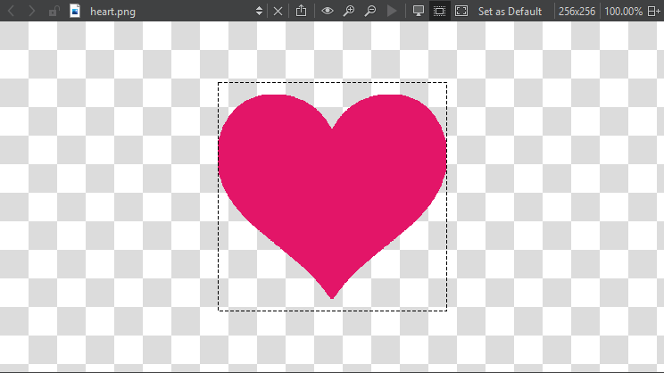

View images
Qt Creator opens image files in the image viewer.

Use the toolbar buttons or keyboard shortcuts to:
 - Export SVG images to pixmaps or copy an image as a data URL, which enables you to include it in web pages as if it were an external resource
- Export SVG images to pixmaps or copy an image as a data URL, which enables you to include it in web pages as if it were an external resource- - Return images to their original size
- - Zoom in and out ()
 - Play and pause animated GIF and MNG images
- Play and pause animated GIF and MNG images - Show and hide the image background
- Show and hide the image background- - Show and hide the image outline
- - Fit images to screen
Select Set as Default to use the current settings for the background and outline modes and fitting images to screen as default values for the image viewer.
See also How To: Design UIs and UI Design.